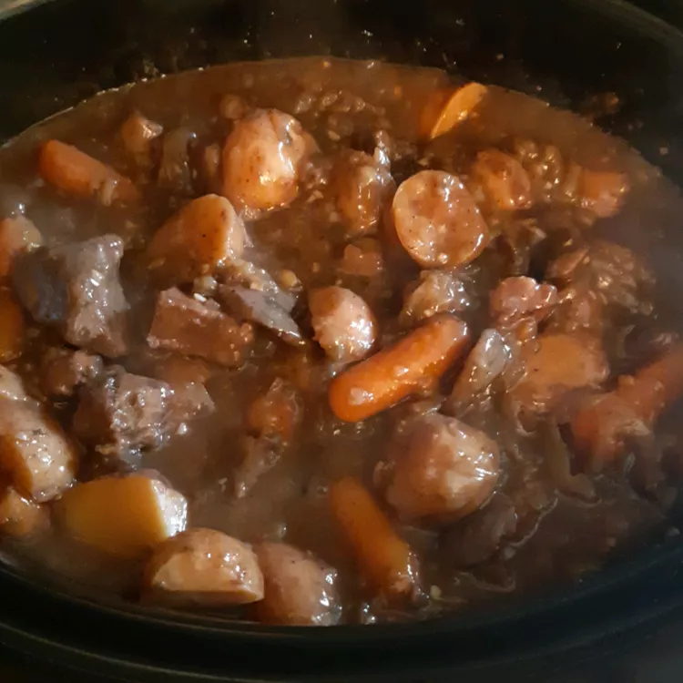

Beef Stew

Hearty Beef Stew
My son calls this very-hearty beef stew 'world famous!' You will need a
large slow cooker.
- 3 pounds cubed beef stew meat
- 1/4 cup all-purpose flour
- 1/2 teaspoon salt
- 3 tablespoons olive oil
- 3 tablespoons Worcestershire sauce
- 1 pound carrots, peeled and cut into 2-inch pieces
- 4 large potatoes, cubed
- 1 tablespoon dried parsley
- 1 1/2 teaspoons ground black pepper
- 2 cups boiling water
- 1 (1 ounce) envelopes onion soup mix
- 3 tablespoons butter
- 3 large onions, quartered
- 2 tablespoons minced garlic
- 1/2 cup Burgundy wine
- 2 (6 ounce) packages fresh button mushrooms, halved
- 1/4 cup warm water
- 3 tablespoones cornstarch